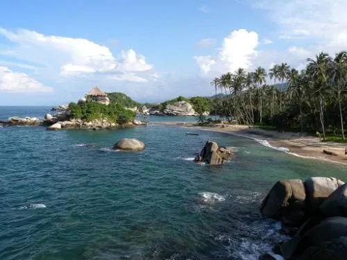
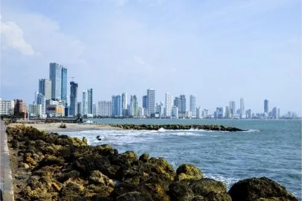

TurismoON: una página para tu paraíso
1-Bogotá D.C
La próspera capital de Colombia cautiva con su arquitectura colonial y sus edificios de diseños vanguardistas. En ella tienes la oportunidad de ver los principales lugares turísticos en Bogotá ingresando por alguno de sus dos aeropuertos o por carretera desde las ciudades más cercanas del país.
Al llegar te toparás con una inagotable oferta cultural con numerosos museos, expresiones artísticas, centros culturales y festivales al aire libre. Así como su gastronomía que combina lo mejor de la comida local y la extranjera que se conoce como una de las mejores de Latinoamérica.
Bogotá se localiza entre los 10 sitios turísticos de Colombia que no puedes dejar de visitar. Si te apasiona la naturaleza, en el día visita el Jardín Botánico José Celestino Mutis y para un gran cierre de día puedes ir en la noche a sus discotecas, bares o clubes.
2-Parque Tayrona (Santa Marta)
Si te gusta la naturaleza, la aventura y las caminatas, el Parque Tayrona debe estar entre los lugares turísticos en Colombia para visitar. Está ubicado en el departamento del Magdalena, en las laderas de Sierra Nevada. Para llegar, lo mejor es que partas desde la ciudad de Santa Marta, dirección a la Guajira.
Ya en el parque tienes la opción de ir a la playa Cañaveral y playa Arrecifes, ambas disponen de zonas de camping, cabañas y hamacas, aunque su fuerte oleaje impide que te bañes en sus aguas.
Sin embargo, si quieres nadar un rato a 10 minutos se encuentra Arenilla y La Piscina, que son playas de arena blanca y aguas tranquilas en la que sí podrás darte un chapuzón y hasta bucear.
Y si todavía estás dispuesto a hacer más turismo, a 15 minutos está la playa más famosa del parque, Cabo San Juan de Guía. Se encuentra rodeada de vegetación y dispone de restaurantes y zonas de camping para que pases la noche.
3-Cartagena (Bolívar)
Cartagena de Indias se localiza al norte del país, a orillas del Mar Caribe. Aquí puedes llegar desde el aeropuerto ubicado a sólo 15 minutos del sector turístico-hotelero, o con un crucero que va desde diferentes partes del mundo.
Es una de las ciudades más bellas para hacer un tour en Colombia por sus calles adoquinadas, sus arquitecturas llenas de vivos colores y su identidad colonial, características que la hicieron merecedora de ser declarada Patrimonio de la Humanidad.
Si quieres conocer los mejores lugares exóticos de Colombia tienes que ir a las islas del Barú, Rosario y San Bernardo, para que practiques diferentes deportes náuticos en sus aguas cristalinas.
También te brinda la oportunidad de degustar su comida local e internacional y hacer un recorrido por su muralla de 11 kilómetros.
Página creada por Sergio Delgado
Urbe 2020
Urbe 2020